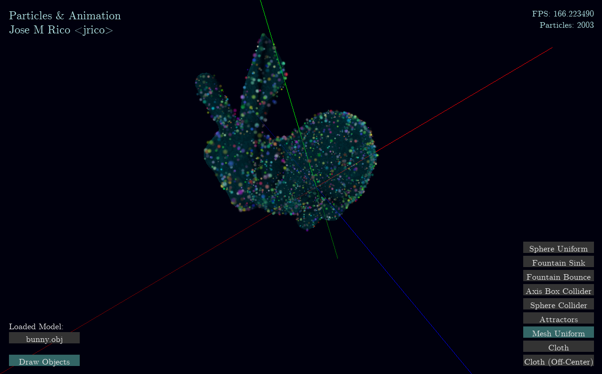

COS426 Assignment 4Animation — Writeup
- (1.0) Euler
- (1.0) Sphere source
- (1.0) Animated mesh
- (1.0) Damping
- (1.0) Uniform distribution
- (1.0) Ground plane
- (1.0) Axis box
- (1.0) Sphere collision
- (2.0) Spring system
- (3.0) Your system
- (1.0) Rendering
- (1.0) Art
Important Note
Once more, I developed this assignment almost from scratch in C++. I'm using the Win32 API for window creation and input, FreeType for font file bitmap loading, libPNG for particle texture loading, and occasionally some borrowed code from online sources, which is all properly cited.
I had to re-implement many of the given systems for this assignment. These include, but are probably not limited to:
- Win32 platform layer, heavily inspired by Handmade Hero
- Implementing a reasonably efficient particle system for drawing (using OpenGL instancing), spawning, removing, etc
- Dealing with all sorts of crazyness of particle z-sorting plus translucent mesh renders**
- Implementation of collision systems that can (hopefully) run on a wide range of framerates or time steps
- Text rendering, with the help of FreeType and OpenGL
- Interactive GUI elements in pixel coordinates
- PNG format image loading using libPNG and OpenGL loading
- Math library with Vectors, Matrices, Quaternions
**I didn't actually solve this completely. I am rendering all 3D meshes with GL_DEPTH_TEST disabled, which means their triangles aren't properly z-sorted. However, since they are translucent, this isn't too noticeable.
I am turning in a Windows executable, titled "particles_win32.exe", which is in the "build" directory. The library file "particles_game.dll" is there as a product of my development environment: it contains all non-Windows-specific code, and gets dynamically linked to the executable. The "data" directory contains all 3D models, textures, and font files. All libraries are statically linked, so the program should require no external libraries other than the Visual C++ runtime.
Controls
The GUI controls are similar to my previous assignments. Clicking and dragging rotates the camera, WASD or the arrow keys move the camera as in a first-person videogame. Scrolling can also be used to move forward and backward. Clicking on things allows you to interact with them. Clicking on the input fields (boxes with text), typing, and pressing ENTER allows you to change their values (specifically the loaded model file, in this assignment).
Euler
All the particle update logic (except for particle spawning) is located in the function UpdateParticleSystem, in particles.cpp. Euler movement is the first thing I implemented: I simply looped through the collection of particles, added gravity and attractors to their velocities, scaled by the time step deltaTime, and then added their velocities to their positions, scaled by deltaTime as well.
Sphere source
Implemented in InitParticleSphere, on main.cpp. These InitParticleX functions are passed on to the particle system, to be called whenever a particle is spawned. I used the rejection sampling approach discussed in the lecture on particle systems: generate random x, y, z independently in [-1, 1], until you obtain a vector whose magnitude is at most 1. Then, normalize and scale by the desired sphere radius.

Animated mesh
Implemented in InitParticleMesh, on main.cpp, with uniform distribution (implementation details on that section). DISCLAIMER: I hope you'll forgive me for not spawning these on an animated model. It was a lot of work to implement 3D model animation into my system, and the implementation for this did not depend at all on the model being animated or not. If the input Mesh on my function were to be changing every frame, this would still work.
Damping
Each frame, UpdateParticleSystem (particles.cpp) damps the velocity based on the linear and quadratic damping terms. Specifically, each frame, I subtract (linearDamp * velocity + quadraticDamp * mag(velocity) * velocity) from the velocity, scaled by deltaTime.
Uniform distribution
I first select a face uniformly at random (weighted by their area). I do this by generating a random floating point number between 0 and the total area of the mesh, then taking a rolling, cumulative sum of the face areas, and selecting the face which makes this cumulative sum greater than the generated random number.
I triangulate all my meshes, so once I have selected a face, I have to figure out how to generate a random point in a triangle, given its vertices. If the assignment had more than triangulated faces, it would be easy to select a triangle within the face, using the same procedure as before: split the polygon into triangles, uniformly pick one at random, weighted by their area.
To generate a random point inside a triangle with vertices v0, v1, v2, I generate two random values a1, a2 in the range [0, 1]. Then, a1 * (v1 - v0) + a2 * (v2 - v0) gives me a random point in the parallelogram (v0, v1, v1 + v2, v2). For points inside the triangle, I simply return them. For points outside the triangle, I reflect them along the edge (v1, v2), and return them.


Ground plane
Implemented in the colliders section of UpdateParticleSystem in particles.cpp. I use the ray starting at the particle position and going forward along its velocity scaled by deltaTime. From this I try to compute the parameter t along which the intersection with the plane occurs (t = 0 means at the position, t = 1 means at position + velocity * deltaTime). I use this method for other collision detections.
I make sure the ray isn't parallel to the plane first. Then, I compute t from the distance of the particle position to the plane. If t is in the range [0, 1], there will be a collision in this frame. For all sink collider types, I destroy the particle by setting its life to past its maximum life. For bounce collider types, I use the helper function HandleBounceCollision in particles.cpp to compute their resulting positions and velocities, from the intersection point and the normal at the intersection. In this case, the intersection point is position + velocity * deltaTime * t, and the normal is the plane normal.
HandleBounceCollision splits the velocity into normal and tangent components. I scale the velocity's normal component by "bounceMult" and its tangent component by "frictionMult", both of which are per-particle parameters. I set the position to the intersection point, offset by a small value along the intersection normal.
NOTE: I changed a value of bounce tolerance last minute, and now the particles are tunneling through the plane once they are near 0 velocity. This could be fixed easily by tweaking this tolerance, but I don't want to break any other collision system.

Axis box
Like the plane collision, I use a ray intersection method, for which I referred to my raytracer assignment. I look for the closest intersection of the ray with the box planes. If there is none, I don't do anything. Otherwise, I either destroy the particle, or bounce it using HandleBounceCollision, and the appropriate intersection point and normal.

Sphere collision
Again, I use a ray intersection method, almost exactly like the one in my raytracer assignment. I look for an intersection, and either destroy the particle or call HandleBounceCollision.

Spring system
Implemented in UpdateParticleSystem, particles.cpp. My application's ParticleSystem struct can be initialized in two ways: in the more common, particles-per-second, spawning and removing state, or in a grid state, where no particles are spawned or removed, there is a width, height, and spacing, there is no z-sorting of particles every frame to keep their memory layout the same, and where each particle feels Hooke forces from its neighbors.
The Hooke forces are calculate in the UpdateParticleSystem function for each neighbor of every particle. This could be made more efficient, since this force is symmetrical. Each particle calls CalculateHookeForce on every neighbor, which calculates the Hooke force from the parameters hookeEqDist (equilibrium distance) and hookeStrength (k).
Note that I had to make the "k" parameter very strong, and the friction coefficient for the particles quite aggresive (around 0.5 friction dampening) for the centered cloth effect to work properly. This means that the offset cloth takes a while to slide off the sphere (though it eventually does).


Your system
This entire assignment was literally making "my own cool particle system" from scratch. However, there are many more things I would have liked to do, which I can at least mention.
- Applying some post-processing filters (such as bloom) for a dramatic effect, especially with fire particles
- Using animated textures, cycling for each particle. Also very cool for fire, or sparks, or other things. This wouldn't have been too difficult: add an additional instanced buffer on top of position and color for UVs, and change UVs of each particle based on which animation frame it is on.
- GPU acceleration of particle simulations (something I wanted to experiment with). I feel I would run into many issues here, especially for transparent particles, since I would need the CPU to sort them. I could definitely use float32-format textures in OpenGL to store positions, velocities, etc, and update particles on shaders. Even the spring system would be quite GPU friendly (only depends on the 2D neighbors, sounds cheap, texture-sampling-wise). However, sorting would probably be an issue. Maybe for additive particles this would be a good fit?
Alas, I must do other school work, and prepare for an interview tomorrow.
Rendering
I have made the alpha value of each particle's color scale with the square root of its remaining life. This makes particles mostly vibrant throughout their lives, but gives them a sharp decay to transparent right before they are destroyed.
Art
The attractors setup here had a cool effect, like a black hole pulling apart a nearby star. The alpha value decrease in addition to the bilinear sampling for each particle gives this a nice blurry touch which feels like a depth-of-field / motion blur effect.